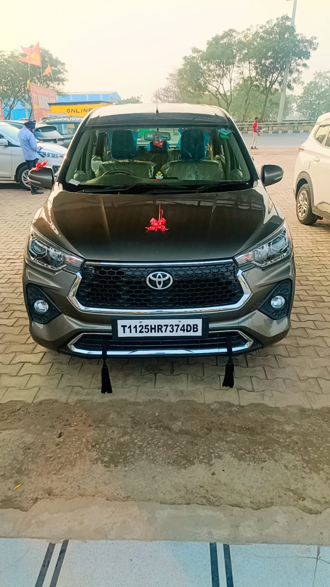

Vehicles Available for Airport & Station Pickup

Sedan
Affordable option for small families.

SUV
Comfortable ride for long-distance travel.

Tempo Traveller
Perfect for group and pilgrim tours.
Comfortable taxi service from Indira Gandhi International Airport to Vrindavan, Mathura and Braj region.
Call Now WhatsApp BookingBraj Cab provides reliable taxi service from Delhi Airport to Vrindavan, Mathura, Govardhan and Barsana. Our drivers track your flight arrival to ensure timely pickup from the airport.
Distance from Delhi Airport to Vrindavan is around 160 km and our experienced drivers ensure a safe and comfortable journey.
Quick taxi pickup from Mathura Junction Railway Station to Vrindavan hotels and temples.
Direct drop to your hotel or guest house in Vrindavan.
Start your temple tour immediately after railway station pickup.
Taxi service available anytime for late night or early morning trains.
Affordable option for small families.

Comfortable ride for long-distance travel.
Perfect for group and pilgrim tours.
Call or WhatsApp for instant taxi booking.
Call Now WhatsApp Booking